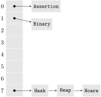
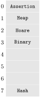
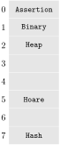

We have seen that search trees can implement maps (and therefore sets). Another data structure for sets (and maps) that is often used in practice are hash tables. The basic idea is that we define a hash function \(h\) from the set of keys \(K\) to int to assign each possible key a bucket in a hash table which is just another way of saying ‘an index in an array’. If \(h\) is injective (i.e. no two keys get assigned the same hash value) and the array is large enough, each key can get its own individual bucket. We then also say that there are no collisions. Checking if a key \(k\) is in the set then reduces to evaluating \(h(k)\) and checking if the array is occupied at \(h(k)\text{.}\) Being occupied could for instance mean that at \(h(k)\) is a value that is associated with \(k\) in case of a map or just a 1 to indicate that \(k\) is in the set. If evaluating \(h(k)\) does not depend on the size of \(k\) we can check membership (and also add and remove) in constant time.
However, in reality, neither is \(h\) injective nor is the array large enough. \(h\) is rarely injective because the cardinality of the key set is typically much higher that the one of int. For example, in the case where the keys are strings, there are strictly more strings that ints. Even if \(h\) was injective, since int comprises \(2^{32}\) values, we would need an array of size \(2^{32}\) to safely avoid all collisions.
So if we have to give up on injectivity anyways, we can also require that the hash function always yields a value within size of our array. In fact, for each hash function \(h\) we can define a new function \(h_m(k)=h(k)\mathrel{\%}m\) where \(m\) is the length of the array. This function always yields a value between 0 and \(m\text{.}\)
In the following, we look at two different techniques for dealing with collisions and still keep the run time of membership tests “low” in practice.
Subsection5.3.1Separate Chaining
The first straightforward idea is to resolve collisions using a list for each bucket. To this end, we are not placing the values (which are associated with the keys) directly into the hash table but in fact make the array an array of lists. The idea is that all elements that are hashed to the same bucket are chained in the collision list for that bucket.
Figure5.3.1.Chained collisions in a hash table. The hash table represents the set of keys \(K\supseteq S=\{k_1,k_2,k_3\}\text{.}\) Keys \(k_1\) and \(k_2\) collide under \(h_m\text{.}\)
The following code shows a sample implementation of a hash table with separate chaining in C. The function `hash_chain_search` searches for a given key. It returns 1 if the key is in the table and 0 otherwise. In any case, it stores into insert the address of an entry pointer. If a new entry must be added to the hash table (when inserting an element), this pointer needs to be set to the freshly added entry.
typedef int (*eq_t)(void* p, void* q);
typedef int (*hash_fct_t)(void* key);
typedef struct entry_t {
void* key;
struct entry_t* next;
} entry_t;
typedef struct {
unsigned size; // # of keys in the table
unsigned table_length; // length of the hash table
float max_load_factor; // the maximal load factor
hash_fct_t h; // the hash function.
entry_t** table; // an array of singly-linked entry lists
} chaining_hashtable_t;
/// This function searches for a key
/// in a hash tab with separate chaining.
/// @param ht The hash table
/// @param key The key to search for
/// @param hash The hash function value for key
/// @param eq A function to compare two keys for equality
/// @param insert The address of a pointer to an entry_t pointer.
/// There, we will put the address of the pointer
/// where the new collision chain entry should be
/// appended in the case where we insert a new key.
int hash_chain_search(chaining_hashtable_t* ht, void* key,
eq_t equals, entry_t*** insert) {
unsigned bucket = ht->h(key) % ht->table_length; // compute h_m
*insert = ht->table + bucket;
for (entry_t* e = ht->table[bucket]; e != NULL; e = e->next) {
if (equals(e->key, key))
return 1;
*insert = &e->next;
}
return 0;
}
Listing5.3.2.Searching in a hash table with separate chaining. The insert parameter will be set to the address of a pointer to an entry. This pointer can be used by the insertion function to chain-in a new entry.
/// Insert into a hash table with separate chaining.
int hash_chain_insert(chaining_hashtable_t* ht, void* key, eq_t equals) {
entry_t** insert;
int found = hash_chain_search(ht, key, equals, &insert);
if (found) {
// the hash table did not change
return 0;
}
// The search function sets insert to the address of
// the last next pointer in the collision chain
assert (*insert == NULL);
// here, we know that the element is not in the table
// so we allocate a new list entry
entry_t* e = malloc(sizeof(*e));
// initialize the entry
e->next = NULL;
e->key = key;
// and append it to the collision chain
*insert = e;
++ht->size;
return 1;
}
Listing5.3.3.Inserting into a hash table with separate chaining.
Subsection5.3.2The Load Factor
Consider the situation that we were to add \(n\) keys into a hash table with \(m\) entries. Under the optimistic assumption that the hash function \(h(k)\mathrel{\%}m\) distributed the \(n\) keys evenly across the hash table, each collision chain has length \(\alpha=n/m\text{.}\) This number \(\alpha\) is called the load factor of the hash table. The operations add, remove, search (check for containment) can, under this assumption, be carried out in \(O(1+\alpha)\) operations.
Of course the assumption that the hash function distributes the data evenly across the table is in general hard to prove. Especially, for a given hash function, it depends on the concrete set of keys to be inserted how evenly the keys will be scattered over the table. And of course, because the hash function is in general not injective, by the pigeonhole principle 12 , for each bucket there exists a “worst-case” of keys that all map to this bucket.
In practice, one is interested in keeping \(\alpha\lt 1\) which means that, in the ideal case, no collision contains more than one key. To achieve this, on each insertion operation the load factor is checked and if it passes a certain threshold (0.75 is a common value) the hash table is resized. Note that when the hash table is resized, \(h_m\) also changes and all elements in have to be rehashed into the new table. Doubling the size of the table yields an amortized constant number of rehashing operations for the same argument made in Subsection 5.1.1.
int hash_chain_insert_resize(chaining_hashtable_t* ht, void* key, eq_t eq) {
if (ht->size > ht->max_load_factor * ht->table_length) {
ht->table_length *= 2;
assert (ht->size < ht->max_load_factor * ht->table_length);
entry_t** old_table = ht->table;
// allocate new table and initialize to 0
ht->table = calloc(ht->table_length, sizeof(ht->table[0]));
// go over old hash table and add each element to new table
rehash_table(ht, old_table);
// free old table
free(old_table);
}
return hash_chain_insert(ht, key, eq);
}
Listing5.3.4.Inserting into a hash table with separate chaining with resizing of the hash table if the load factor threshold is exceeded. The function `rehash_table` traverses all collision chains of the old table and inserts the elements into the new table.
Subsection5.3.3Hash Tables and Mutability
When hashing mutable data (cf. Section 8.6) one has to be extremely cautious. Typically, the value of the hash function depends on the fields of the struct/class. Changing the values of the fields while a certain object is referenced from a hash table may suddenly make the hash value with which it was hashed in and therefore the hash table index invalid so that it cannot be found anymore.
Consider the following example:
typedef struct {
int numerator, denominator;
} fraction_t;
int hash_fraction(fraction_t* f) {
int d = f->d;
int n = f->n;
return (d + n) * (d + n + 1) / 2 + n;
}
Here, the hash value for a data type that represents fractions is computed using the fraction's numerator and denominator. For example, the fraction \(2/7\) has the hash value 52. Assume that such a fraction is inserted to a hash table with a table length longer than 52. Then, it will be appended to the collision chain of bucket 52. If, after it has been inserted, the fraction is changed to, say, \(2/9\) the hash value changes and the fraction is in the collision chain of the wrong bucket. Searching for \(2/7\) in that hash table will consequently yield a negative result.
Subsection5.3.4Open Addressing
Chaining collisions in dedicated linked lists has the disadvantage that the linked lists incur additional memory overhead for the list elements and that linked lists have more or less random memory access patterns (see the discussion at the end of Section 5.1). Therefore, one often uses open addressing (also known as probing) where the collision chain is stored in the hash table itself.
which, in addition to the key, also takes a number \(i\) that serves as the position of key in its collision chain, and yields the table index where the \(i\)-th element of \(k\)'s collision chain shall be stored. When inserting a new key \(k\) into the hash table, we compute \(h'(k,0)\) and check if the hash table is occupied at this position. If not, we enter \(k\) there. If yes, we compute \(h'(k,1)\) and check again, and so on.
typedef struct {
unsigned size;
unsigned table_length;
float max_load_factor;
hash_fct_t h;
void** table;
} open_addr_hashtable_t;
int open_addr_hashtable_search(open_addr_hashtable_t* ht,
void *key, eq_t equals) {
for (unsigned i = 0; i < ht->table_length; i++) {
// call probing function to compute bucket
// of collision chain entry
unsigned bucket = h_prime(ht->h(key), i);
void* k = ht->table[bucket];
if (k == NULL || equals(k, key))
return bucket;
}
Listing5.3.5.Inserting into a hash table with open addressing.
The function probing_hashtable_search returns the table index of a key equal to key if such a key is in the table. If there is no such key, it returns the index in the hash table where key can be inserted. If all entries \(h'(k,0),h'(k,1),\dots,h'(k,m-1)\) are occupied it returns the error code -1. The pressing question now is if the table really is full in this case, i.e. if \(h'\) is surjective with respect to its second parameter for each key. This certainly depends on how we define \(h'\text{.}\) In the following, we will discuss two different ways of defining \(h'\) for which hold that
Linear probing trivially guarantees that each bucket will be searched for \(k\text{,}\) i.e. if there is a free bucket, linear probing will find it. A disadvantage of linear probing is that in practice sometimes clusters will form at certain entries which can impede performance of the search operation (see Listing 5.3.5): The larger the clusters the further away from \(h'(k,0)\) will be the actual bucket for a key \(k\) and the more the run time for searching increases. An advantage however is the linear access pattern in which the table is traversed. This may lead to better cache locality and favor several microarchitectural optimizations modern processors make.
Quadratic Probing.
Quadratic probing was introduced to solve the problem of cluster formation of linear probing. To this end, one introduces a quadratic term to “push” higher collision chain entries further away:
Now the question is can \(c\) and \(d\) chosen such that \(h'\) is surjective on the table for each key. (Again, if it is not, this implies that we would not be able to add a key even if the table was not full.) The following theorem establishes that by setting \(c=d=1/2\) makes \(h'\)injective on \(\{0,\dots,s^k-1\}\) for any \(k\ge 0\text{.}\)
Theorem5.3.6.
\(h_a'(i)\defeq (a+i(i+1)/2)\mathrel{\%}{2^k}\) is injective on \(\{0,\dots,2^k-1\}\text{.}\)
Now, the first observation is that for \(i\ne j\) the product \((i+j+1)(i-j)\) is also unequal to zero, so we have \(q\ne 0\text{.}\) Second, for all \(i,j\) holds that if \((i-j)\) is odd, then \((i+j+1)\) is even. This means that exactly one of both factors is a multiple of \(2^{k+1}\text{.}\) But since \(i\) and \(j\) are chosen from \(\{0,\dots,2^k-1\}\text{,}\) both \((i+j+1)\) and \((i-j)\) are less than \(2^{k+1}\) which is a contradiction.
Corollary5.3.7.
\(h_a'(i)\defeq (a+i(i+1)/2)\mathrel{2^k}\) is surjective on \(\{0,\dots,2^k-1\}\text{.}\)
Since the domain of \(h_a'\) is equal to the codomain, Theorem 5.3.6 implies that \(h_a'\) is a bijection and hence surjective.
Subsection5.3.5A Comprehensive Example
Let us contrast collision resolution by chaining, linear and quadratic probing. We successively add the following strings into the hash tables
Hash Assertion Heap Hoare Binary
For the sake of simplicity, we use the index of first letter in the alphabet as the hash value of the string, i.e. \(h(\mathtt{'A'})=0,h(\mathtt{'B'})=1\text{,}\) etc. Note that in practice this is not a good hash function because it throws all strings that start with the same letter into the same bucket. Better hash functions would consider at least multiple characters of the string and maybe also weight them differently to differentiate permutations.
Figure5.3.8.Collision resolution with separate chaining.
Figure5.3.9.Collision resolution with open addressing and linear probing.
Figure5.3.10.Collision resolution with open addressing and quadratic probing.
Subsection5.3.6Deleting from a Hash Table with Open Addressing
An interesting situation arises when deleting an element from an open addressing hash table. Let us consider the example in Figure 5.3.9 and assume that we want to remove the key ‘Heap’ after having inserted all the keys. If we just remove “Heap” from the table and set the table entry to NULL, there will be a “hole” in the linear probing sequence for entry Hoare. So if we search for Hoare after having removed Heap this way, we would not find it anymore because the search function (Listing 5.3.5) would interpret the collision chain for Hoare to be terminated at index 1.
This problem can be solved by not setting the table entry of the removed key to NULL but to a special value, sometimes called tombstone to indicate that there was an entry. When searching for insertion points, tombstones count as empty entries, when searching for containment checking, they count as occupied entries.
Subsection5.3.7Summary
We have merely scratched the surface of hashing and only explained some of the basic concepts.
Hashing is widely used in practice because it is very fast, typically faster than search trees. Especially open addressing hash tables, although on first sight less intuitive as separate chaining hash tables, are considered to perform very well mostly because they have very good memory access behavior due to their locality: everything is concentrated in one array. One may want also want to directly place the hashed key-value pairs into the table and not operate with void* pointers as we did in our examples for the sake of simplicity. In practice that typically depends on the size of the key-value pair.
We have said little about what makes a good hash function. This is a wide field and often also subject to empirical evaluations. Intuitively, a good hash function should scatter the data evenly across the hash table but it is not straightforward to say something substantial on specific hash functions.
We have also omitted a solid formal derivation of worst-case run time bounds because this is in general not possible without making further assumptions. One very prominent formal approach is universal hashing where one draws hash functions randomly and is able to prove run time bounds for specific hash functions independent of the data.
Although hashing is not easy to come by theoretically, it is, although there exit pathological worst-case scenarios, very popular in practice because it is very fast in the average case. We refer the interested reader to a recent extensive experimental study that explores many different dimensions in the hashing design space [15].
The pigeonhole principle says that if \(n\) keys are mapped to \(m\) entries with \(n\ge m\text{,}\) then at least one entry must contain more than one key.